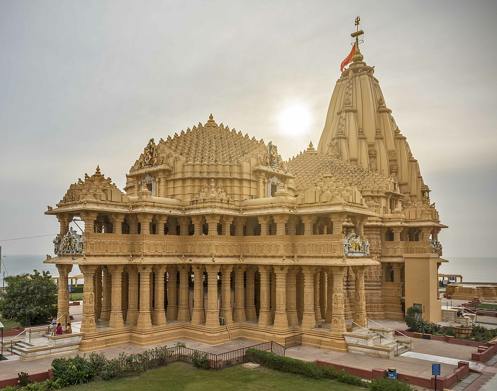
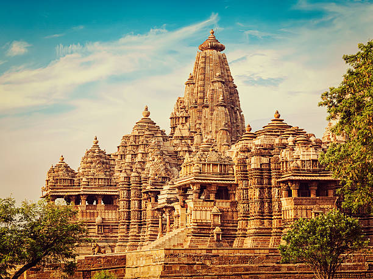
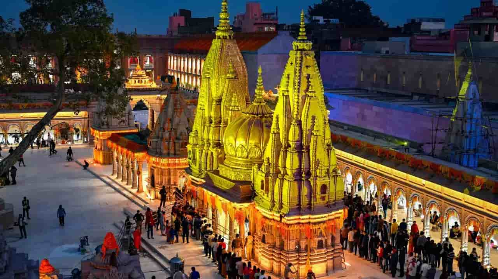
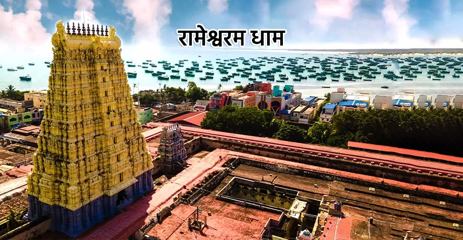
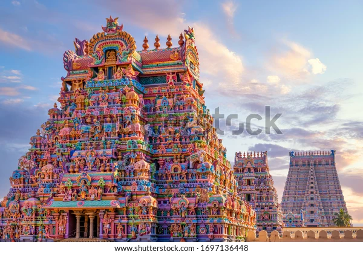
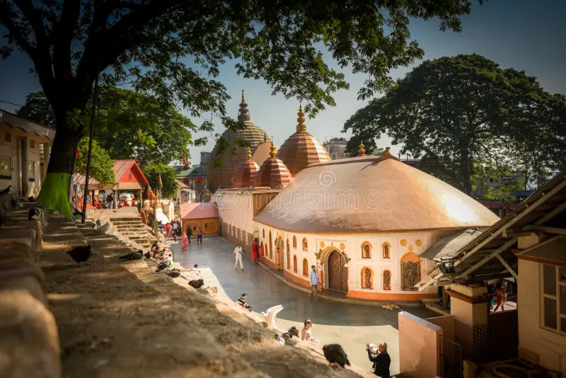
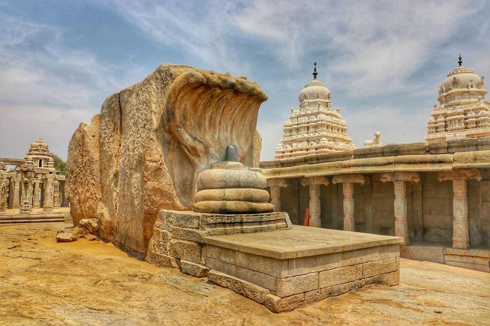
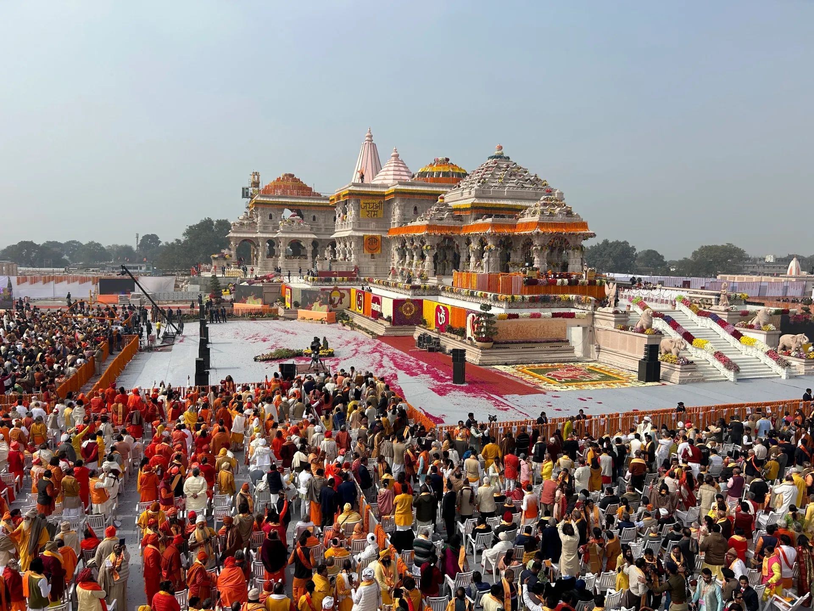
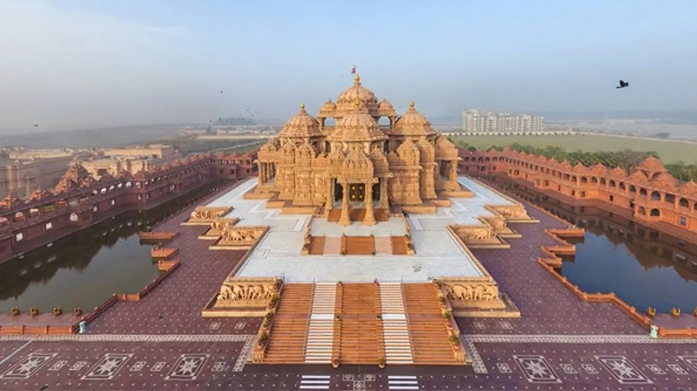
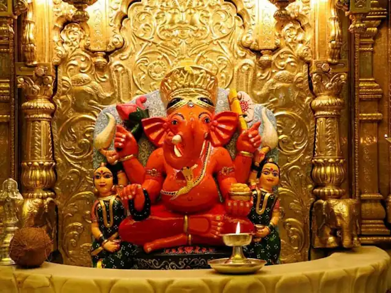

"Welcome to our destinations"

Vaishno Devi
Vaishno Devi is a revered Hindu pilgrimage site located in the Trikuta Mountains of Jammu and Kashmir, India. It is dedicated to the goddess Vaishno Devi, also known as Mata Rani or Trikuta. The shrine is one of the most visited pilgrimage destinations in India, attracting millions of devotees each year.

Tirupati Balaji
Tirupati Balaji, also known as Venkateswara Temple, is a famous Hindu temple located in the town of Tirumala, near Tirupati in the Indian state of Andhra Pradesh. It is dedicated to Lord Venkateswara, an incarnation of Lord Vishnu. The temple is one of the most visited pilgrimage sites in the world, attracting millions of devotees each year.

Kedarnath
Kedarnath is a sacred Hindu pilgrimage site located in the Indian state of Uttarakhand. It is one of the four sacred shrines known as the Char Dham and is dedicated to Lord Shiva. Kedarnath is situated in the Himalayas, at an altitude of approximately 3,583 meters (11,755 feet) above sea level, making it one of the highest temples in India.

Jagannath Temple
The Jagannath Temple is a famous Hindu temple located in the city of Puri, in the Indian state of Odisha. It is dedicated to Lord Jagannath, a form of Lord Vishnu, along with his siblings, Balabhadra and Subhadra. The temple is one of the Char Dham pilgrimage sites and is renowned for its annual Rath Yatra (Chariot Festival), which attracts millions of devotees from around the world.

Somnath Temple
Somnath Temple is a revered Hindu temple located in the Prabhas Kshetra near Veraval in the Saurashtra region of Gujarat, India. It is dedicated to Lord Shiva and is considered one of the twelve Jyotirlinga shrines, which are highly sacred in Hinduism.

Badrinath Temple
Badrinath Temple is a sacred Hindu temple located in the town of Badrinath in the Indian state of Uttarakhand. It is dedicated to Lord Vishnu and is one of the Char Dham pilgrimage sites, which are considered highly sacred in Hinduism.
Tirupati Balaji Temple
Tirupati Balaji Temple, also known as Venkateswara Temple, is a famous Hindu temple located in the town of Tirumala, near Tirupati in the Indian state of Andhra Pradesh. It is dedicated to Lord Venkateswara, an incarnation of Lord Vishnu. The temple is one of the most visited pilgrimage sites in the world, attracting millions of devotees each year.

Dwarkadhish Temple
Dwarkadhish Temple, also known as Jagat Mandir, is a famous Hindu temple located in the city of Dwarka in the Indian state of Gujarat. It is dedicated to Lord Krishna, who is worshipped here as Dwarkadhish, meaning "King of Dwarka". The temple is one of the Char Dham pilgrimage sites and holds great religious significance for Hindus.

Golden Temple
The Golden Temple, also known as Harmandir Sahib or Darbar Sahib, is a prominent Sikh gurdwara located in Amritsar, Punjab, India. It is one of the most revered spiritual sites in Sikhism and is known for its stunning architecture and serene surroundings. The temple is called the "Golden Temple" due to its gold-plated exterior, which shines brilliantly in the sunlight.

Khajuraho Temple
The Khajuraho Temples are a group of Hindu and Jain temples located in the town of Khajuraho in the Indian state of Madhya Pradesh. They are renowned for their stunning architecture and intricate erotic sculptures, which depict various aspects of life, including love and sensuality. The temples were built between the 9th and 11th centuries by the Chandela dynasty and are now a UNESCO World Heritage Site.

Kashi Vishwanath Temple
Kashi Vishwanath Temple is a famous Hindu temple located in the city of Varanasi, Uttar Pradesh, India. It is dedicated to Lord Shiva and is one of the twelve Jyotirlinga shrines, which are considered highly sacred in Hinduism. The temple is situated on the western bank of the holy river Ganges and holds immense religious significance for Hindus.

rameshwaram Dham
Rameshwaram Dham, also known as Ramanathaswamy Temple, is a famous Hindu temple located in the town of Rameshwaram in the Indian state of Tamil Nadu. It is dedicated to Lord Shiva and is one of the twelve Jyotirlinga shrines considered highly sacred in Hinduism. The temple is situated on Rameshwaram Island, which is connected to the mainland by the Pamban Bridge.

Sri Ranganathaswamy Temple
Sri Ranganathaswamy Temple, also known as Ranganatha Swamy Temple, is a famous Hindu temple located in the town of Srirangam in the Indian state of Tamil Nadu. It is dedicated to Lord Ranganatha, a reclining form of Lord Vishnu. The temple is one of the largest functioning Hindu temples in the world and is considered one of the most important pilgrimage sites for Vaishnavites.

Kamakhya Devi Temple
Kamakhya Devi Temple is a famous Hindu temple located in the city of Guwahati in the Indian state of Assam. It is dedicated to Goddess Kamakhya, who is considered one of the most powerful and revered deities in Hinduism. The temple is situated on the Nilachal Hill and is one of the 51 Shakti Peethas, which are important pilgrimage sites for devotees of the goddess.

Veerbhadra Temple
Veerbhadra Temple, also known as Lepakshi Temple, is a famous Hindu temple located in the village of Lepakshi in the Indian state of Andhra Pradesh. It is dedicated to Lord Veerbhadra, a fierce form of Lord Shiva. The temple is renowned for its stunning architecture and intricate carvings, which showcase the rich cultural heritage of the Vijayanagara Empire.

Ram Mandir
Ram Mandir, also known as Ram Janmabhoomi Temple, is a Hindu temple currently under construction in the city of Ayodhya in the Indian state of Uttar Pradesh. It is dedicated to Lord Rama, one of the most revered deities in Hinduism. The temple is being built at the site believed to be the birthplace of Lord Rama and holds great religious significance for Hindus.

Akshardham Temple
Akshardham Temple, also known as Swaminarayan Akshardham, is a magnificent Hindu temple complex located in Delhi, India. It is dedicated to Bhagwan Swaminarayan and showcases the rich cultural heritage, spirituality, and architectural brilliance of India. The temple complex is renowned for its stunning architecture, intricate carvings, and beautiful gardens.

Siddhivinayak Vinayak
Shree Siddhivinayak Temple is a famous Hindu temple in Mumbai dedicated to Lord Ganesha, known for fulfilling devotees' wishes and removing obstacles. Originally a small shrine, the temple has evolved into a grand structure with a gold-plated dome and intricately carved wooden doors. The sanctum houses the idol of Siddhivinayak, flanked by Riddhi and Siddhi (symbols of prosperity and spiritual power)